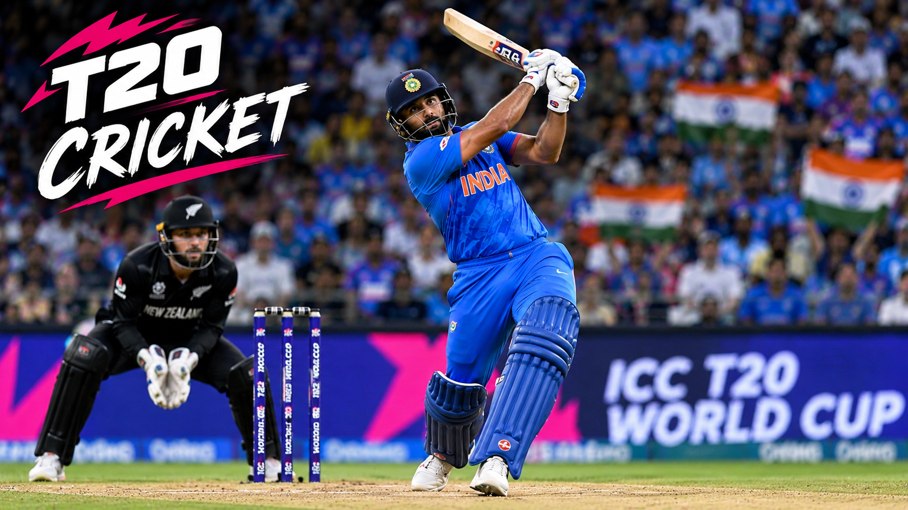

What is T20I Cricket?
T20I (Twenty20 International) cricket is a format of the game where each team faces a maximum of 20 overs (120 balls). It is known for its fast-paced nature and entertainment value. There is only one powerplay in T20I cricket which is between overs 1-6 where only 2 fielders are allowed outside a 27m circle(approx.) and the other fielders have to stay within the circle. T20I cricket is a great format for batters to score quickly and for bowlers to take wickets. There are two major tournaments played in T20I cricket. They are called the ICC T20 World Cup and the ICC T20 World Cup Qualifier. The ICC T20 World Cup is played every 2 years and the ICC T20 World Cup Qualifier is played every 4 years. The current ICC T20 World Cup champions are India and the current ICC T20 World Cup Qualifier winners are UAE and Zimbabwe. T20I cricket is a great format for fans to watch and enjoy as it is fast-paced and exciting. T20 cricket is also played either different or same grounds and can end up turning into a night game.
Record Holders in T20I Cricket:
- Most Runs in T20I Cricket: Barbar Azam (Pakistan) - 4,596 runs
- Most Wickets in T20I Cricket: Rashid Khan (Afghanistan) - 743 wickets
- Highest Individual Score in a T20I Innings: Lhuan-dre Pretorius(South Africa) - 188 runs
- Best Bowling Figures in a T20I Innings: Sonam Yeshey(Bhutan) - 8 wickets for 7 runs

This cricket website is a member and proud partner with New Zealand Cricket and The International Cricket Council